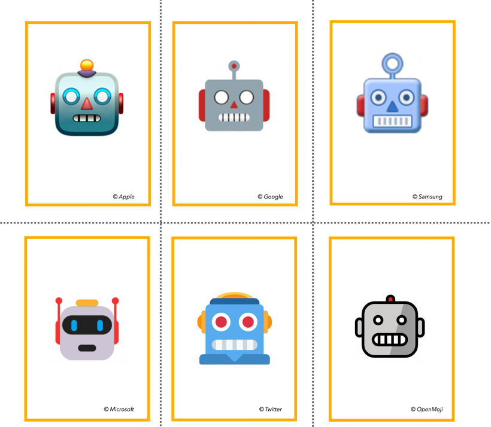
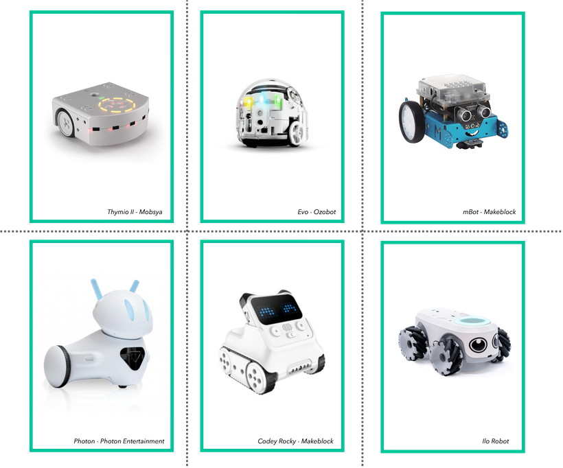

Robot apprend à dessiner
Module 1 · 7–10 ans (4–6P) · 20 min · 4 étapes · fiche à imprimer
Cette fois, on ne donne pas d’instructions : on montre des exemples. Chaque groupe joue une machine, repère ce que ses robots ont en commun et dessine un robot nouveau. En comparant, la classe voit que le résultat dépend des exemples.
L’idée à retenir : On ne dit pas tout à la machine : on lui montre des exemples. Elle repère des régularités dans les exemples et produit un résultat qui leur ressemble, sans comprendre comme nous ce qu’est un robot. Ce qui manque dans les exemples sort rarement.



Anne, enseignante, te guide étape par étape : les idées des élèves, la trace écrite, ce que l’activité simplifie.
Les cartes A, B, C (PDF)Guide pour l’enseignant·e (PDF)
Objectifs
- Découvrir qu’une machine peut « apprendre » à partir d’exemples plutôt que d’instructions : elle repère des régularités dans les exemples.
- Produire un robot nouveau mais plausible à partir des régularités d’un jeu d’exemples.
- Comprendre que le résultat dépend des exemples : ce qui manque dans les exemples sort rarement, et ce sont des humains qui choisissent les exemples.
Notions
exemples · régularités · résultat plausible · ce qui manque (biais)
EN 12 progression sur le tri et le classement d’objets selon des critères (cycle 1) · EN 22.4
La séance · 4 étapes · 20 min
Observation · 5 min, par groupe (peut se raccourcir) — Chaque groupe observe son jeu de cartes et relève ce que tous ses robots ont en commun.
« On ne donne pas d’instructions, on montre des exemples. Qu’ont en commun tous vos robots ?nbsp;»
Le déroulement en détail
- Forme des groupes de 3 ou 4. Chaque groupe reçoit un jeu de six cartes (A, B ou C) et une fiche ; au moins un groupe par jeu.
- Dis la consigne, puis le groupe note sur la fiche 3 ou 4 choses présentes sur toutes ses cartes. Pour le jeu A : une tête seule, carrée aux coins arrondis, deux yeux, quelque chose de chaque côté et sur le dessus, une bouche.
- Passe dans les groupes et fais vérifier chaque critère : « Même celle-là ?nbsp;» Ce qui n’est que sur quelques cartes ne compte pas.
Ce qui doit ressortir : Chaque groupe a la liste de ce qui revient sur toutes ses cartes : des régularités.
Génération · 5 min, par groupe — Le groupe est la machine : il dessine un robot nouveau, qui n’est pas dans les exemples mais pourrait en faire partie.
« Dessinez un nouveau robot qui ne figure pas parmi vos exemples, mais qui pourrait en faire partie. »
Le déroulement en détail
- Dis la consigne. Avant le dessin, fais prédire : « Votre robot aura-t-il une tête ronde ? Montrez la carte qui le dit. »
- Le groupe dessine un seul robot, simplement, avec seulement ce qu’il a vu sur ses cartes. Il ne recopie pas une carte.
- Fais vérifier : « Y avait-il ça dans vos exemples ?nbsp;» Pour le jeu A : une tête ronde ? une tête toute rouge ?
Ce qui doit ressortir : Un robot nouveau, qui ressemble aux exemples : un robot plausible.
Comparaison · 5 min, en classe — Fais prédire, puis affiche les dessins côte à côte : ils diffèrent, car chaque machine avait d’autres exemples.
« Pourquoi les robots sont-ils différents d’un groupe à l’autre ? Votre machine aurait-elle pu dessiner un robot à quatre pattes ?nbsp;»
Le déroulement en détail
- Avant d’afficher, fais prédire : « Le robot du groupe B aura-t-il des jambes ? Pourquoi ?nbsp;»
- Affiche chaque dessin à côté de son jeu de cartes.
- « Pourquoi les robots sont-ils différents d’un groupe à l’autre ?nbsp;» Ce qui peut venir : chaque machine avait d’autres exemples.
- « Votre machine aurait-elle pu dessiner un robot à quatre pattes ?nbsp;» Ce qui peut venir : peu probable, il n’y en avait pas dans les exemples. Relance : « Qui a choisi les cartes ? Que faudrait-il ajouter ?nbsp;»
Ce qui doit ressortir : Le résultat dépend des exemples. Ce qui manque dans les exemples sort rarement, et ce sont des humains qui choisissent les exemples.
Faire le point · 5 min, en classe — La trace écrite, en trois lignes : exemples, régularités, ce qui manque.
« Qui a choisi les cartes ?nbsp;»
Le déroulement en détail
- Pour chaque ligne : pose la question, écoute les réponses, puis écris la ligne au tableau. Les élèves la copient.
- « Qu’avez-vous donné à votre machine : des instructions ou des exemples ?nbsp;» → On ne lui dit pas tout : on lui montre des exemples. Elle repère des régularités dans les exemples.
- « Votre robot ressemble-t-il à vos exemples ? Pourquoi ?nbsp;» → Elle produit un robot nouveau qui ressemble aux exemples. Elle ne comprend pas comme nous ce qu’est un robot.
- « Pourquoi aucune machine n’a dessiné de robot à quatre pattes ? Qui a choisi les cartes ?nbsp;» → Ce qui manque dans les exemples sort rarement. Ce sont des humains qui choisissent les exemples : ils en ont la responsabilité.
Avant la séance
Les 3 jeux de cartes « apprentissage IA » (A, B, C), un jeu différent par groupe · une fiche par groupe, pour noter les critères et dessiner · des groupes de 3 ou 4 élèves, chaque groupe est « la machine ».
Pour bien comprendre
Dans Robot dessine, on lui disait tout. Ici, on lui montre des exemples : elle repère des régularités dans les exemples.
Elle produit un résultat plausible, qui ressemble aux exemples. Elle ne comprend pas comme nous ce qu’est un robot : les élèves nomment les critères (« il a des antennes »), la machine, elle, ne nomme rien, elle calcule.
Ce qui manque dans les exemples sort rarement. Ce sont des humains qui choisissent les exemples : ils en ont la responsabilité.
Conseils
- Le jeu A est le plus facile. Si tous les groupes commencent avec A, donne B et C à deux groupes avant l’étape 2 : la comparaison a besoin d’exemples différents.
- Si un groupe du jeu A dessine une tête ronde et toute rouge, demande : « Dans vos exemples, y avait-il des têtes rondes ? Des têtes toutes rouges ?nbsp;»
- À l’étape 3, fais prédire avant d’afficher : « Le robot du groupe B aura-t-il des jambes ?nbsp;» Puis affiche chaque dessin à côté de son jeu de cartes.
Évaluer
- Expliquer la différence entre une machine qui suit des instructions écrites par des humains et une machine qui repère des régularités dans des exemples.
- Expliquer pourquoi deux « machines » entraînées sur des exemples différents produisent des résultats différents.
- Dire que ce qui manque dans les exemples sort rarement, et que des humains choisissent les exemples.
Dans le module
Robot dessine 1 · instruction fausseRobot dessine 2 · instructions flouesRobot apprend à dessiner